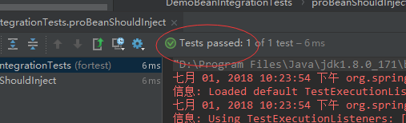
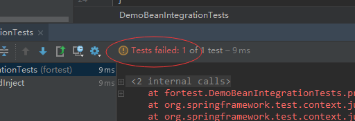

主要记录Spring容器中的Bean如何实现Aware接口来对事件进行发布管理，Spring容器通过一个基于线程池的任务执行器来进行异步任务的并发，条件注解的使用，组合注解声明，Enable*注解的原理以及如何进行测试。
Spring Aware Spring的依赖注入最大亮点就是所有的Bean 对Spring 容器的存在是没有意识的。即可以将现在的容器换成别的容器，比如 Goole Guice，这时Bean之间的耦合度很低。
但是实际项目中不可避免的用到Spring 容器本身的功能资源，这时Bean必须意识到Spring 容器的存在，才能调用Spring所提供的资源，这就是Spring Aware。使用了Spring Aware 的话Bean将会和Spring 架构之间耦合。
Spring 提供的Aware接口如图所示：
接口
功能
BeanNameAware
获得容器中Bean的名称
BeanFactoryAware
获得当前 bean factory，这样可以调用容器服务。
ApplicationContextAware*
当前 application context，这样可以调用容器服务。
MessageSourceAware
获得message source，这样可以获得文本信息。
ApplicationEventPublisherAware
应用事件发布器，可以发布事件。
ResourceLoaderAware
获得资源加载器，可以获得外部资源文件
Spring Aware 的目的是为了让Bean获得Spring 容器的服务。因为ApplicationContext接口集成了MessageSource接口、ApplicationEventPublisher接口和ResourceLoader接口，所以Bean 只要继承ApplicationContext就可以获得Spring容器的所有服务，但原则上还是用到什么接口就实现什么接口。
示例，Spring Aware演示的Bean
1 2 3 4 5 6 7 8 9 10 11 12 13 14 15 16 17 18 19 20 21 22 23 24 25 26 27 28 29 30 31 32 33 34 35 36 37 package aware;import org.apache.commons.io.IOUtils;import org.springframework.beans.factory.BeanNameAware;import org.springframework.context.ResourceLoaderAware;import org.springframework.core.io.Resource;import org.springframework.core.io.ResourceLoader;import org.springframework.stereotype.Service;import java.io.IOException;@Service public class AwareService implements BeanNameAware , ResourceLoaderAware private String beanName; private ResourceLoader loader; @Override public void setResourceLoader (ResourceLoader resourceLoader) this .loader = resourceLoader; } @Override public void setBeanName (String name) this .beanName = name; } public void outputResult () System.out.println("Bean的名称为：" + beanName); Resource resource = loader.getResource("classpath:aware/test.txt" ); try { System.out.println("ResourceLoader加载的文件内容为：" + IOUtils.toString(resource.getInputStream())); } catch (IOException e){ e.printStackTrace(); } } }
配置类：
1 2 3 4 5 6 7 8 9 package aware;import org.springframework.context.annotation.ComponentScan;import org.springframework.context.annotation.Configuration;@Configuration @ComponentScan ("aware" )public class AwareConfig }
运行：
1 2 3 4 5 6 7 8 9 10 11 12 13 14 15 16 17 18 19 package aware;import org.springframework.context.annotation.AnnotationConfigApplicationContext;public class Main public static void main (String[] args) AnnotationConfigApplicationContext context = new AnnotationConfigApplicationContext(AwareConfig.class); AwareService awareService = context.getBean(AwareService.class); awareService.outputResult(); context.close(); } } 运行结果： Bean的名称为：awareService ResourceLoader加载的文件内容为：this is a test file
多线程 Spring 通过任务执行器(TaskExecutor) 来实现多线程和并发编程。使用TaskExecutorConfig 可实现一个基于线程池的TaskExecutor。实际开发中的任务一般是非阻碍的，即异步的，所以需要在配置类中使用@EnableAsync开启对异步任务的支持，并通过在实际执行的Bean方法中使用@Async注解来生命这是一个异步任务。
通过一个示例来进行说明，首先写配置类：
1 2 3 4 5 6 7 8 9 10 11 12 13 14 15 16 17 18 19 20 21 22 23 24 25 26 27 28 29 30 package taskexecutor;import org.springframework.aop.interceptor.AsyncUncaughtExceptionHandler;import org.springframework.context.annotation.ComponentScan;import org.springframework.context.annotation.Configuration;import org.springframework.scheduling.annotation.AsyncConfigurer;import org.springframework.scheduling.annotation.EnableAsync;import org.springframework.scheduling.concurrent.ThreadPoolTaskExecutor;import java.util.concurrent.Executor;@Configuration @ComponentScan ("taskexecutor" )@EnableAsync public class TaskExecutorConfig implements AsyncConfigurer @Override public Executor getAsyncExecutor () ThreadPoolTaskExecutor taskExecutor = new ThreadPoolTaskExecutor(); taskExecutor.setCorePoolSize(5 ); taskExecutor.setMaxPoolSize(10 ); taskExecutor.setQueueCapacity(25 ); taskExecutor.initialize(); return taskExecutor; } @Override public AsyncUncaughtExceptionHandler getAsyncUncaughtExceptionHandler () return null ; } }
然后是任务执行类，就是上面所说的Bean：
1 2 3 4 5 6 7 8 9 10 11 12 13 14 15 16 17 18 package taskexecutor;import org.springframework.scheduling.annotation.Async;import org.springframework.stereotype.Service;@Service public class AsyncTaskService @Async public void executorAsyncTask (Integer i) System.out.println("执行异步任务： " + i); } @Async public void executorAsyncTaskPlus (Integer i) System.out.println("执行异步任务+1： " + (i+1 )); } }
运行：
1 2 3 4 5 6 7 8 9 10 11 12 13 14 15 16 17 18 19 20 21 22 23 24 25 26 27 28 29 30 31 32 33 34 35 36 37 38 39 package taskexecutor;import org.springframework.context.annotation.AnnotationConfigApplicationContext;public class Main public static void main (String[] args) AnnotationConfigApplicationContext context = new AnnotationConfigApplicationContext(TaskExecutorConfig.class); AsyncTaskService asyncTaskService = context.getBean(AsyncTaskService.class); for (int i = 0 ; i<10 ; i++){ asyncTaskService.executorAsyncTask(i); asyncTaskService.executorAsyncTaskPlus(i); } context.close(); } } 运行结果如下所示： 执行异步任务+1 ： 1 执行异步任务+1 ： 3 执行异步任务： 3 执行异步任务+1 ： 4 执行异步任务： 4 执行异步任务+1 ： 5 执行异步任务： 5 执行异步任务+1 ： 6 执行异步任务： 6 执行异步任务+1 ： 7 执行异步任务： 7 执行异步任务+1 ： 8 执行异步任务： 8 执行异步任务+1 ： 9 执行异步任务： 9 执行异步任务+1 ： 10 执行异步任务+1 ： 2 执行异步任务： 2 执行异步任务： 0 执行异步任务： 1
可以看出运行结果是并发执行而不是顺序执行的。
计划任务 从Spring3.1开始，计划任务在Spring中的实现变得非常简单，首先通过在配置类添加注解@EnableScheduling 来开启对计划任务的支持，然后在要执行计划任务的方法上注解@Scheduled，声明这是一个计划任务。通过该注解Spring支持多种类型的计划任务，包含cron、fixDelay、fixRate等。
首先实现计划任务实现类：
1 2 3 4 5 6 7 8 9 10 11 12 13 14 15 16 17 18 19 20 21 22 package taskscheduler;import org.springframework.scheduling.annotation.Scheduled;import org.springframework.stereotype.Service;import java.text.SimpleDateFormat;import java.util.Date;@Service public class ScheduledTaskService private static final SimpleDateFormat dateFormat = new SimpleDateFormat("HH:mm:ss" ); @Scheduled (fixedRate = 5000 ) public void reportCurrentTime () System.out.println("每隔五秒执行一次 " + dateFormat.format(new Date())); } @Scheduled (cron = "0 50 19 ? * *" ) public void fixTimeExecution () System.out.println("在指定时间 " + dateFormat.format(new Date()) + "执行" ); } }
然后实现配置类，主要是开启对计划任务的支持：
1 2 3 4 5 6 7 8 9 10 11 package taskscheduler;import org.springframework.context.annotation.ComponentScan;import org.springframework.context.annotation.Configuration;import org.springframework.scheduling.annotation.EnableScheduling;@Configuration @ComponentScan ("taskscheduler" )@EnableScheduling public class TaskSchedulerConfig }
运行类：
1 2 3 4 5 6 7 8 9 10 11 12 13 14 15 16 17 18 package taskscheduler;import org.springframework.context.annotation.AnnotationConfigApplicationContext;public class Main public static void main (String[] args) AnnotationConfigApplicationContext context = new AnnotationConfigApplicationContext(TaskSchedulerConfig.class); } } 运行效果如下图所示： 每隔五秒执行一次 19 :49 :46 每隔五秒执行一次 19 :49 :51 每隔五秒执行一次 19 :49 :56 在指定时间 19 :50 :00 执行 每隔五秒执行一次 19 :50 :01 每隔五秒执行一次 19 :50 :06
条件注解@Conditional Spring 4提供了一个基于条件的Bean的创建，即使用@Conditional注解，该注解根据满足某一个特定条件创建一个特定的Bean。如当一个jar包在一个类路径下的时候，自动配置一个或多个Bean；或者只有某个Bean被创建才会创建另外一个Bean。
下面演示一个以不同操作系统为条件，通过实现Condition接口，并重写matches方法来构造判断条件。
首先实现Windows条件的判定：
1 2 3 4 5 6 7 8 9 10 11 12 package conditional;import org.springframework.context.annotation.Condition;import org.springframework.context.annotation.ConditionContext;import org.springframework.core.type.AnnotatedTypeMetadata;public class WindowsCondition implements Condition @Override public boolean matches (ConditionContext context, AnnotatedTypeMetadata metadata) return context.getEnvironment().getProperty("os.name" ).contains("Windows" ); } }
Linux条件判定：
1 2 3 4 5 6 7 8 9 10 11 12 package conditional;import org.springframework.context.annotation.Condition;import org.springframework.context.annotation.ConditionContext;import org.springframework.core.type.AnnotatedTypeMetadata;public class LinuxCondition implements Condition @Override public boolean matches (ConditionContext context, AnnotatedTypeMetadata metadata) return context.getEnvironment().getProperty("os.name" ).contains("Linux" ); } }
定义Service接口：
1 2 3 4 5 package conditional;public interface ListService public String showList () }
Windows下要创建的Bean：
1 2 3 4 5 6 7 8 9 package conditional;public class WindowsListService implements ListService @Override public String showList () return "dir" ; } } package conditional;
Linux下要创建的Bean：
1 2 3 4 5 6 7 8 package conditional;public class LinuxListService implements ListService @Override public String showList () return "ls" ; } }
配置类：
1 2 3 4 5 6 7 8 9 10 11 12 13 14 15 16 17 18 19 20 package conditional;import org.springframework.context.annotation.Bean;import org.springframework.context.annotation.Conditional;import org.springframework.context.annotation.Configuration;@Configuration public class ConditionConfig @Bean @Conditional (WindowsCondition.class) public ListService WindowsListService () return new WindowsListService(); } @Bean @Conditional (LinuxCondition.class) public ListService LinuxListService () return LinuxListService(); } }
运行类：
1 2 3 4 5 6 7 8 9 10 11 12 13 14 15 16 17 18 19 20 package conditional;import org.springframework.context.annotation.AnnotationConfigApplicationContext;public class Main public static void main (String[] args) AnnotationConfigApplicationContext context = new AnnotationConfigApplicationContext(ConditionConfig.class); ListService listService = context.getBean(ListService.class); System.out.println(context.getEnvironment().getProperty("os.name" ) + "系统下的列表命令为：" + listService.showList()); } } 在Windows下的运行结果： Windows 10 系统下的列表命令为：dir 打包为jar包，Linux下的运行结果： INFO: Refreshing org.springframework.context.annotation.AnnotationConfigApplicationContext@7 cd84586: startup date [Sun Jul 01 21 :06 :31 CST 2018 ]; root of context hierarchy Linux系统下的列表命令为：ls
组合注解与元注解 从Spring 2开始，为了响应jdk 1.5推出的注解功能，Spring开始大量加入注解来代替xml配置。之前所涉及到的基本上都是元注解，元注解其实就是可以注解到别的注解上的注解，被注解的注解则称为组合注解，组合注解具备注解其上的元注解的功能。下面通过一个自定义的注解实现将@Configuration和@ComponentScan两个注解的组合。
首先实现示例组合注解：
1 2 3 4 5 6 7 8 9 10 11 12 13 14 15 package annotation;import org.springframework.context.annotation.ComponentScan;import org.springframework.context.annotation.Configuration;import java.lang.annotation.*;@Target (ElementType.TYPE)@Retention (RetentionPolicy.RUNTIME)@Documented @Configuration @ComponentScan public @interface WiselyConfigration { String[] value() default {}; }
演示服务Bean：
1 2 3 4 5 6 7 8 9 10 package annotation;import org.springframework.stereotype.Service;@Service public class DemoService public void outputResult () System.out.println("从组合注解获得bean" ); } }
加上组合注解的配置类：
1 2 3 4 package annotation;@WiselyConfigration ("annotation" ) public class DemoConfig }
运行：
1 2 3 4 5 6 7 8 9 10 11 12 13 14 15 16 17 18 package annotation;import org.springframework.context.annotation.AnnotationConfigApplicationContext;public class Main public static void main (String[] args) AnnotationConfigApplicationContext context = new AnnotationConfigApplicationContext(DemoConfig.class); DemoService demoService = context.getBean(DemoService.class); demoService.outputResult(); context.close(); } } 运行结果如下： 从组合注解获得bean
@Enable*注解的工作原理 所有的@Enable*注解中都有一个@Import注解，是用来导入配置类的。具体说明可以看这里 。
测试 Spring 通过Spring TestContext Framework对集成测试提供顶级支持，它不依赖特定的测试框架，既可使用Junit、也可使用TestNG。
基于Maven构建的项目结构默认有关于测试的目录：src/test/java(测试代码)、src/test/resources(测试资源)，区别于src/main/java(项目源码)、src/main/resources(项目资源)。
Spring提供了一个SpringJUnit4ClassRunner类，接下来对该类提供的部分功能进行演示。
首先添加Spring测试的依赖包到Maven：
1 2 3 4 5 6 7 8 9 10 11 12 <dependency > <groupId > junit</groupId > <artifactId > junit</artifactId > <version > 4.11</version > </dependency > <dependency > <groupId > org.springframework</groupId > <artifactId > spring-test</artifactId > <version > 4.1.7.RELEASE</version > </dependency >
业务代码，在 src/main/java目录下：
1 2 3 4 5 6 7 8 9 10 11 12 13 14 15 16 17 package fortest;public class TestBean private String content; public TestBean (String content) this .content = content; } public String getContent () return content; } public void setContent (String content) this .content = content; } }
配置类，在 src/main/java目录下：
1 2 3 4 5 6 7 8 9 10 11 12 13 14 15 16 17 18 19 20 package fortest;import org.springframework.context.annotation.Bean;import org.springframework.context.annotation.Configuration;import org.springframework.context.annotation.Profile;@Configuration public class TestConfig @Bean @Profile ("dev" ) public TestBean devTestBean () return new TestBean("from development profile" ); } @Bean @Profile ("prod" ) public TestBean prodTestBean () return new TestBean("from production profile" ); } }
测试类，在src/test/java目录下：
1 2 3 4 5 6 7 8 9 10 11 12 13 14 15 16 17 18 19 20 21 22 23 24 package fortest;import org.junit.Assert;import org.junit.Test;import org.junit.runner.RunWith;import org.springframework.beans.factory.annotation.Autowired;import org.springframework.test.context.ActiveProfiles;import org.springframework.test.context.ContextConfiguration;import org.springframework.test.context.junit4.SpringJUnit4ClassRunner;@RunWith (SpringJUnit4ClassRunner.class) @ContextConfiguration (classes = {TestConfig.class}) @ActiveProfiles ("prod" ) public class DemoBeanIntegrationTests @Autowired private TestBean testBean; @Test public void proBeanShouldInject () String expected = "from production profile" ; String actual = testBean.getContent(); Assert.assertEquals(expected, actual); } }
测试效果如下图所示：

接下来将@ActiveProfiles(“prod”)改为@ActiveProfiles(“dev”)，效果如下所示：
